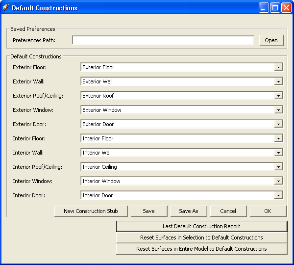

Default Constructions
Default Constructions
- Default Constructions are used to set constructions on new geometry as it is drawn.
- Default Constructions are defined for each of exterior and interior floors, walls, roof/ceilings, windows, and doors. Currently there are no separate Default Constructions for below-grade surfaces.

- Default Constructions are initialized to the constructions used to start a new model from the IDF template, such as "Exterior Wall". The template file is located under OpenStudio/NewTemplate.idf. This is automatically loaded when you start a new IDF file.
- When opening an IDF file that has no constructions with names corresponding to those in a new file, you will be prompted to provide defaults. You can ignore this prompt if you do not plan to draw new geometry.
- Changing the Default Constructions does not affect existing surfaces. It only sets the defaults for surfaces created from that point forward.
- Choose "Apply to Entire Model" or "Apply to Selection" to quickly reset existing surfaces to the current Default Constructions. This can be applied either to a given selection or the entire model. Use the Surface Search Tool to create custom selections of surfaces across multiple zones for resetting to Default Constructions. If a selection contains no surfaces of a given type; e.g., interior doors, the value for that surface types Default Construction has no affect and does not need to be set.
- Surfaces are reset to the current default interior or exterior construction of their type when the surface matching routine is run.
- It is necessary that matched surfaces from different zones share the same constructions. If you choose a single zone as a selection and then apply newly changed Default Constructions to that zone; matched surfaces in adjacent zones may now be out of sync. You will have to make sure they are in sync again before running a simulation.
- New Construction Stub enables you create a new Construction to reference. You can start assigning this construction to surfaces right away, but at some point you will need to edit this new construction in the IDF file directly to set the desired properties.
- You can save your Default Constructions Preferences to an external file for a given project, and reopen these settings when needed to avoid having to manually reset each time you open the file. You are not exporting the actual constructions, only the names. The constructions have to be in a given IDF file to use them.
- You can obtain a report of the last Default Construction application in comma separated value (CSV) format to verify the operations that have been performed.
|